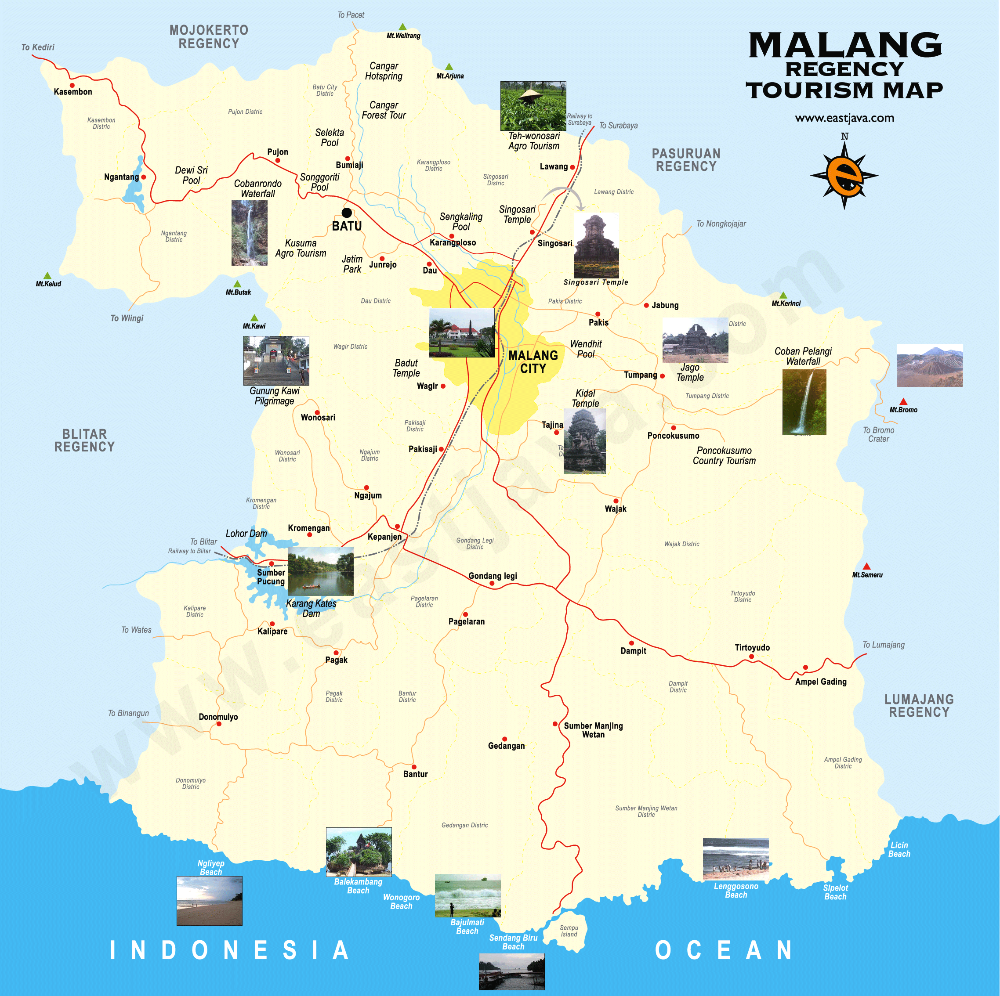

Malang is the second-largest city in East Java, Indonesia, and the 12th largest city nationwide. Officially established during the Dutch colonial administration on April 1, 1914, the city is situated on a high plateau spanning around 145 km², surrounded by beautiful mountains and blessed with a cool, refreshing climate. Together with Batu City and Malang Regency, it forms the vibrant metropolitan region known as Malang Raya.
Widely celebrated as the "City of Education", Malang is home to several top-tier universities, including Universitas Brawijaya, Universitas Negeri Malang, UIN Malang, and Politeknik Negeri Malang. Beyond academics, it is a renowned tourism hub, often called the "City of Flowers" due to its lush greenery. The city also boasts a rich artistic heritage, which is part of the Arek cultural zone that famous for traditional performances like the Topeng Malang dance.
Malang preserves a fascinating historical legacy, from ancient kingdoms like Kanjuruhan to colonial-era architecture such as the Gothic-style Kayutangan Church and the iconic Alun-Alun Tugu landmark. The city actively honors its past through events like the Malang Tempo Doeloe festival. Additionally, Malang has a unique linguistic identity: Bahasa Walikan, a local reversed-slang dialect widely used by the youth across Malang Raya.